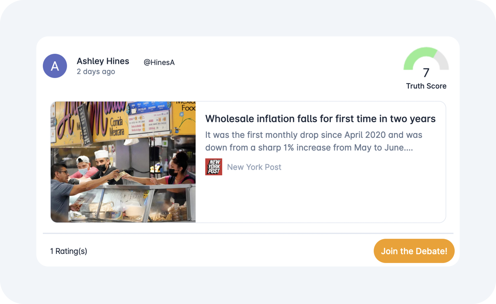

Arbitral
Try It Now
Media bias has
gone
unchecked for too long.
That ends here and now
with you and
Arbitral
Experience Social Media with a Purpose...
Get Started
A portrait of truth can only be painted with facts
